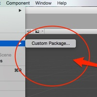

テラシュールブログ
id:tsubaki_t1

【Unity】ImportPackage（StandardAssets）が無い時の対処
たまに人様のUnityを使用しているとStandardAssetsのパッケージが見つからないケースがあります。ImportPackageを開いてもCustom Packageのみ… 原因 簡単な話、これはUnityをインストールした際にStandard Assetsをインストールしていなかった為に発生します。 ここを外すとUnityインストール後のStandardAssetsの中身が空…